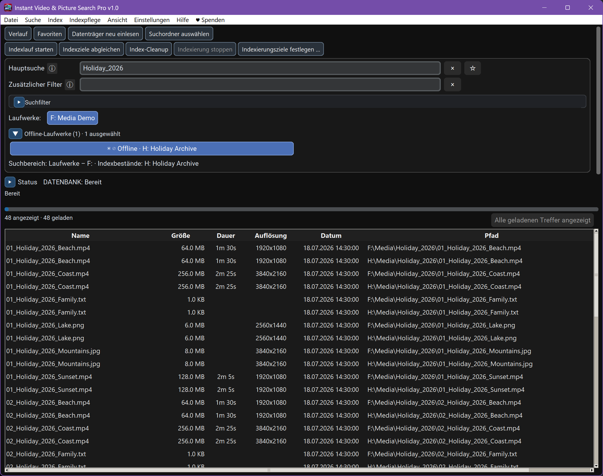
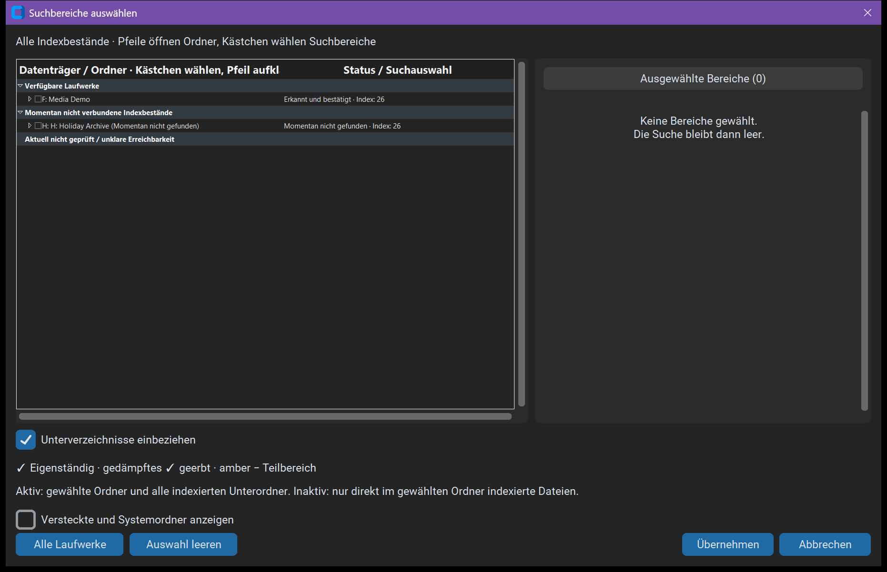
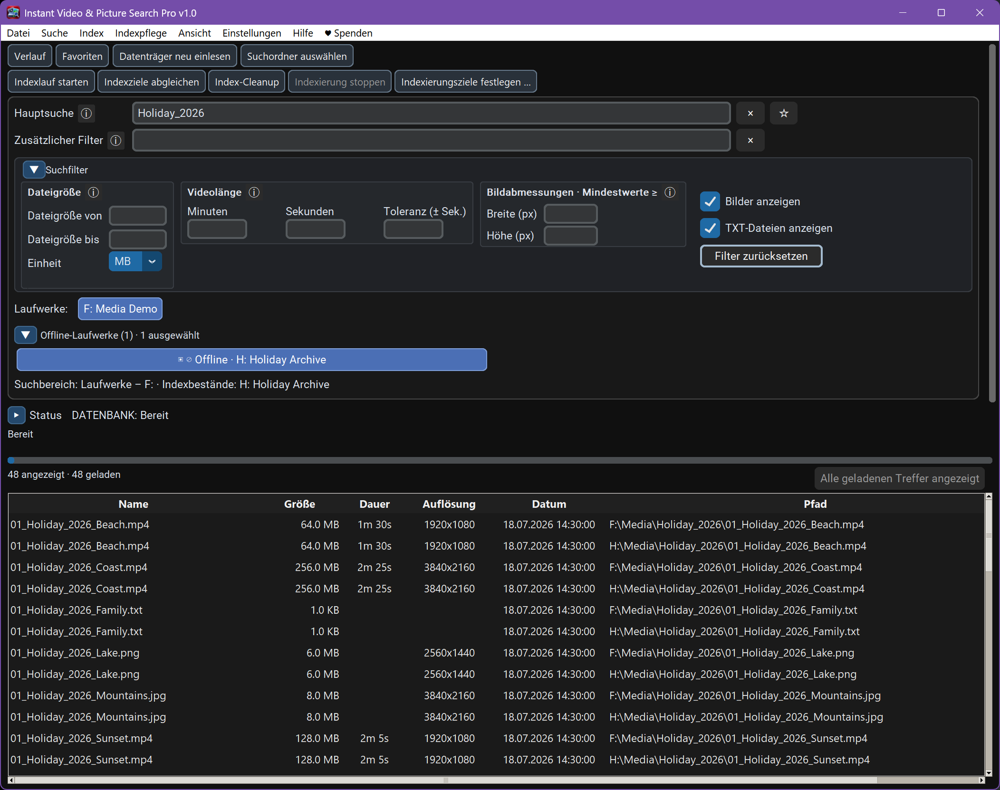
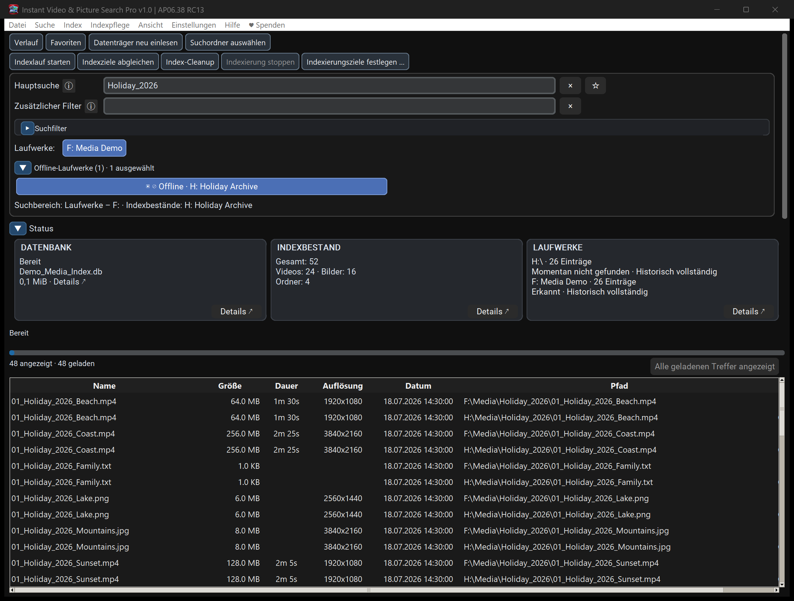

Einmal erfassen, schnell wiederfinden
Lokale Indizes statt jedes Mal alle Festplatten neu zu durchsuchen.
Ausgewählte Daten einmal indexieren. Danach Dateinamen und gespeicherte Pfade sehr schnell über den lokalen Index durchsuchen – auch in großen Beständen auf mehreren Festplatten.
Bisherige praktische Suchzeiten liegen häufig bei ungefähr einer Sekunde. Ein Erfahrungswert, keine garantierte Suchzeit: Indexbestand, Suchanfrage und Computer spielen mit.
Lokale Datenbank. Ohne Cloud-Suchdienst. Deutsch & Englisch.
Lokale Indizes statt jedes Mal alle Festplatten neu zu durchsuchen.
Erreichbare Dateien öffnen oder direkt zu ihrem Speicherort im Windows-Explorer wechseln.
Dateigröße, Videolänge und Bildabmessungen filtern; Verlauf und Favoriten erneut verwenden.



WENIGER SUCHEN. MEHR WIEDERFINDEN.
Ob auf dem Rechner oder einer externen Festplatte: Finde unterstützte Dateien anhand ihrer gespeicherten Namen, Pfade und Metadaten.
Nach der Indexierung sucht die Anwendung im lokalen Bestand. Für jede neue Suchanfrage müssen deine Festplatten nicht vollständig durchlaufen werden.
Verwalte interne und externe Datenträger. Bereits gespeicherte Bestände lassen sich auch durchsuchen, wenn die betreffende Festplatte getrennt ist.
Öffne einen Treffer mit deiner zugeordneten Windows-Anwendung oder zeige den Speicherort im Explorer an. Die Datei muss dafür erreichbar sein.
Finde Videos, Bilder und unterstützte TXT-Dateien nach Namen oder Pfad. Der zusätzliche Textfilter grenzt die Hauptsuche weiter ein.
Bereits indexierte Dateien bleiben anhand ihrer gespeicherten Informationen auffindbar, wenn die Festplatte getrennt ist. Gespeicherte Laufwerksidentitäten unterscheiden die Bestände. Zum Öffnen muss der passende Datenträger wieder verfügbar sein.
Wähle einzelne indexierte Ordner oder ganze Bestände. Entscheide, ob Unterverzeichnisse Teil deines Suchbereichs sein sollen.
Filtere nach Dateigrößenbereich sowie gespeicherter Breite und Höhe. Bilder lassen sich in den Suchergebnissen ein- oder ausblenden.
Kombiniere Minuten, Sekunden und eine Toleranz. Fehlende Metadaten können eine Datei von einem aktiven Zahlenfilter ausschließen.
Speichere Hauptsuchtexte als Favoriten oder greife auf den Verlauf zurück. Aktualisiere den Index bewusst, wenn sich deine Sammlung verändert.
Die Suche im vorhandenen SQLite-Index benötigt keinen Cloud-Suchdienst. Ein getrennter Datenträger bleibt mit seinem gespeicherten Bestand auffindbar; Öffnen erfordert eine erreichbare Datei.
Der Index speichert Namen, Pfade und Metadaten. Es gibt keinen eingebauten Videoplayer und keine KI-Erkennung von Bildmotiven oder Gesichtern.
SO FUNKTIONIERT’S
Suchbereich und Indexierungsziele haben unterschiedliche Aufgaben. Du entscheidest, welche realen Dateien eingelesen und welche gespeicherten Bestände durchsucht werden.
Wähle die bereits indexierten Laufwerke, deren Einträge du durchsuchen möchtest. Diese Auswahl startet keine Vollindexierung.

Lege getrennt davon die erreichbaren Laufwerke oder Ordner für einen Indexlauf fest. Prüfe Ziele und Unterverzeichnisse in der Vorschau.
Bestätige den Lauf erst nach Kontrolle der Ziele. Laufzeit und geprüfte Dateien zeigen den Stand; eine Restzeit erscheint nur mit verlässlicher Grundlage.
Suche nach Teilen eines Dateinamens oder Pfads. Nutze den Zusatzfilter, wenn du das Ergebnis weiter eingrenzen möchtest.
Grenze Dateigröße, Videolänge oder Bildabmessungen ein. Bilder anzeigen und Filter zurücksetzen sind derselben Filtergruppe zugeordnet.
Öffne den Treffer über die Ergebnisaktion in der zugeordneten Windows-Anwendung. Die Ordneraktion führt zum Speicherort im Explorer; offline ist dafür zunächst der Datenträger nötig.
Windows-Gadgets und praktische Werkzeuge für Desktop und Systemverwaltung.
Filme und Serien übersichtlich verwalten und organisieren.
FAQ
Die wichtigsten Antworten vor dem ersten Indexlauf.
Eine lokale Windows-Anwendung zum Durchsuchen gespeicherter Dateiinformationen von unterstützten Videos, Bildern und TXT-Dateien. Gesucht wird nach Namen, Pfaden und vorhandenen Metadaten, nicht nach Bildinhalten.
Ein ausdrücklich bestätigter Lauf liest die gewählten realen Laufwerke oder Ordner ein und speichert Dateiinformationen in einer lokalen SQLite-Datenbank. Große Bestände können Zeit benötigen; Zugriffs- oder Analysefehler können einen Lauf unvollständig machen.
Nein. Die normale Suche verwendet bereits gespeicherte Indexeinträge. Wenn Dateien hinzugekommen sind oder sich geändert haben, kann ein bewusst gestarteter Indexabgleich den gespeicherten Bestand aktualisieren.
Ja, wenn deren Dateien zuvor in der aktiven Datenbank indexiert wurden. Mehrere Bestände können Teil einer Suche sein.
Ja. Die Suchordnerauswahl grenzt vorhandene Indexeinträge ein, auf Wunsch einschließlich Unterverzeichnissen. Reale Indexierungsziele werden unabhängig davon festgelegt.
Zusätzlicher Text, Dateigrößenbereich, Mindestbreite und Mindesthöhe sowie Videolänge mit Sekunden-Toleranz. Bilder lassen sich ein- oder ausblenden. Die Zahlenfilter nutzen gespeicherte Metadaten.
Die Dateiaktion öffnet ein erreichbares Video mit der zugeordneten Windows-Anwendung. Instant Video & Picture Search Pro enthält keinen eigenen Player; die Wiedergabe hängt vom Standardprogramm und dessen Formatunterstützung ab.
Ja. Ein erreichbares Bild wird über die normale Windows-Dateizuordnung geöffnet. Der Index ersetzt weder die Originaldatei noch einen Bildbetrachter.
Ja. Die Ordneraktion zeigt den Speicherort einer erreichbaren Datei im Windows-Explorer. Bei getrennter oder unklar zugeordneter Festplatte gelten zusätzliche Erreichbarkeits- und Identitätsprüfungen.
Die Suche im lokalen Index benötigt keinen Cloud-Suchdienst. Auch gespeicherte Bestände getrennter Laufwerke können durchsucht werden; die Originaldateien sind dadurch nicht automatisch verfügbar.
In der bewusst ausgewählten lokalen SQLite-Datei. Bestehende benutzerbezogene Einstellungen liegen weiter im ExplorerSuche-Bereich unter den lokalen Windows-Anwendungsdaten. Der Index enthält Dateiinformationen, keine vollständigen Medienkopien.
Sein gespeicherter Indexbestand kann weiterhin als Suchbereich dienen. Dateien lassen sich erst öffnen, wenn sie wieder sicher erreichbar sind. Ein gleicher Laufwerksbuchstabe allein beweist keine Identität.
Kostenlose proprietäre Freeware für private und gewerbliche Nutzung. Der Herausgeber hat diese Programmfassung auf seinem Entwicklungs-PC praktisch geprüft.
Das vollständige ZIP in einen beschreibbaren Ordner entpacken. Die Ordner _internal und Lizenzen bei der EXE belassen. Instant-Video-Picture-Search-Pro.exe starten. Windows kann Herkunftswarnungen anzeigen. Herkunft und SHA-256 prüfen.
Eine Datei wie Urlaub_2026_Familie.txt kann als Suchmarkierung für Dateien ihres Ordners dienen. Die Suche wertet den Dateinamen und Pfad aus, nicht den TXT-Inhalt. Passende Marker liefern begrenzt Ordnerkontext; „TXT-Dateien anzeigen“ blendet TXT-Treffer ein oder aus, ohne die Markierungsfunktion zu löschen. Filter für Dateigrößenbereiche, Videolänge und Abmessungen nutzen gespeicherte Metadaten. Verlauf, Favoriten, Systemtray, Windows-Autostart und optionale Indexaktualisierung ergänzen die lokale Suche. Offline-Bestände sind durchsuchbar; Öffnen verlangt den richtigen verbundenen Datenträger. Keine KI-Inhaltssuche.
Der Suchverlauf öffnet sich am Hauptsuchfeld. Nach der Auswahl bleibt der Suchtext bearbeitbar. Verbundene Laufwerke werden beim Start erkannt. „Datenträger neu einlesen“ aktualisiert die Anzeige. Die manuelle Updateprüfung im Hilfe-Menü liest die Versionsdatei über HTTPS und öffnet bei Bedarf die Downloadseite.
Impressum, Datenschutz und Lizenzhinweise · Freeware-Bedingungen
Der Download ist kostenlos. Eine Spende ist freiwillig.
QR-Code mit der PayPal-App scannen oder die E-Mail-Adresse kopieren.
Bitcoin Mainnet (Native SegWit)

Litecoin Mainnet

BNB Smart Chain (BEP20)

BNB Smart Chain (BEP20)

Prüfe vor dem Senden das Zahlungsziel, die Währung und das Zahlungsnetzwerk. Der Zahlungsanbieter wird beim Öffnen eines Zahlungslinks oder beim Scannen in deiner App kontaktiert.